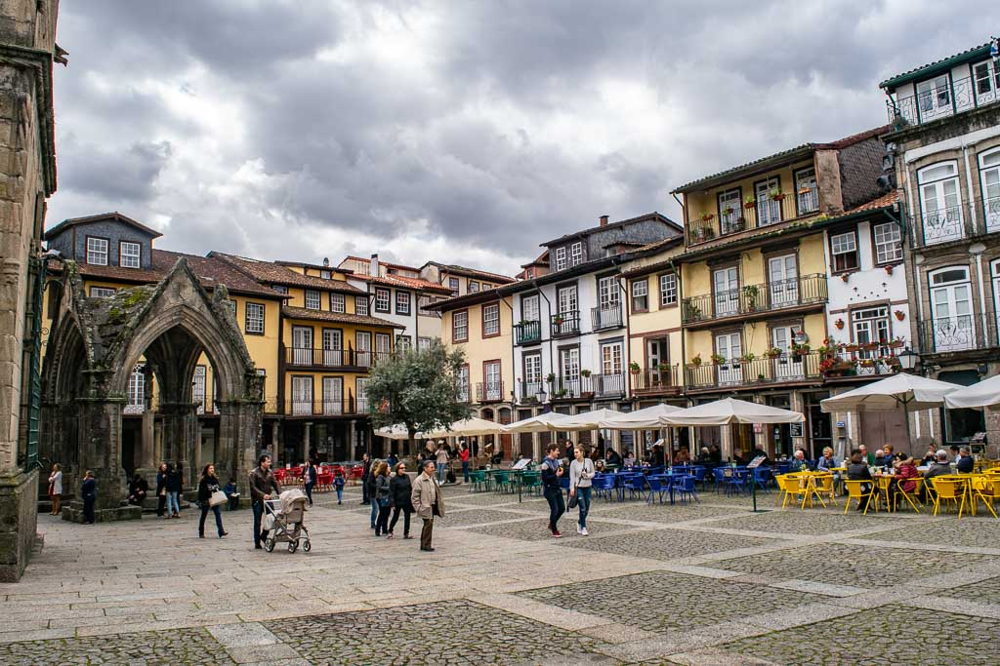

Turismo na cidade de Guimarães
História
Guimarães é um lugar onde o passado se vive no presente e onde cada rua conta a história da nação portuguesa. Reconhecida pela UNESCO com duas áreas classificadas como Património Mundial da Humanidade. Entre muralhas, praças medievais, varandas floridas e ruas estreitas, Guimarães soube preservar a sua identidade e criar um espaço vivido, harmonioso e genuíno, onde passado e presente coexistem de forma única.
Visitar Guimarães é mergulhar nas origens de Portugal, percorrer ruas que parecem suspensas no tempo, descobrir um património industrial único e sentir a hospitalidade de um povo que vive com orgulho o seu legado. Entre monumentos icónicos, praças cheias de vida, boa gastronomia e uma energia cultural vibrante, Guimarães é um destino que se pode visitar em qualquer altura do ano — e que sempre deixa vontade de regressar.
Cafés do Centro
